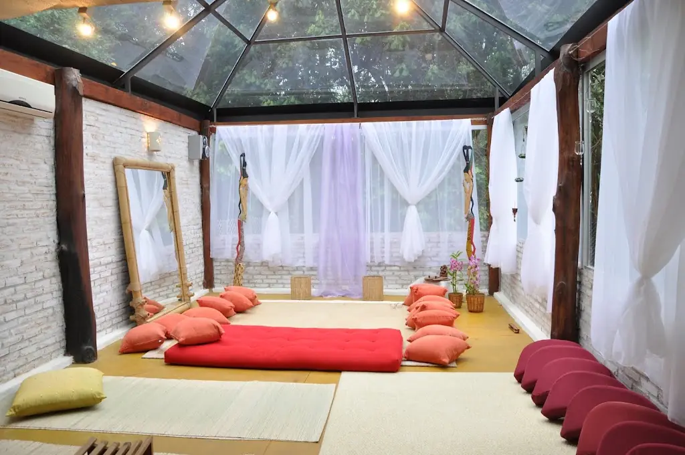
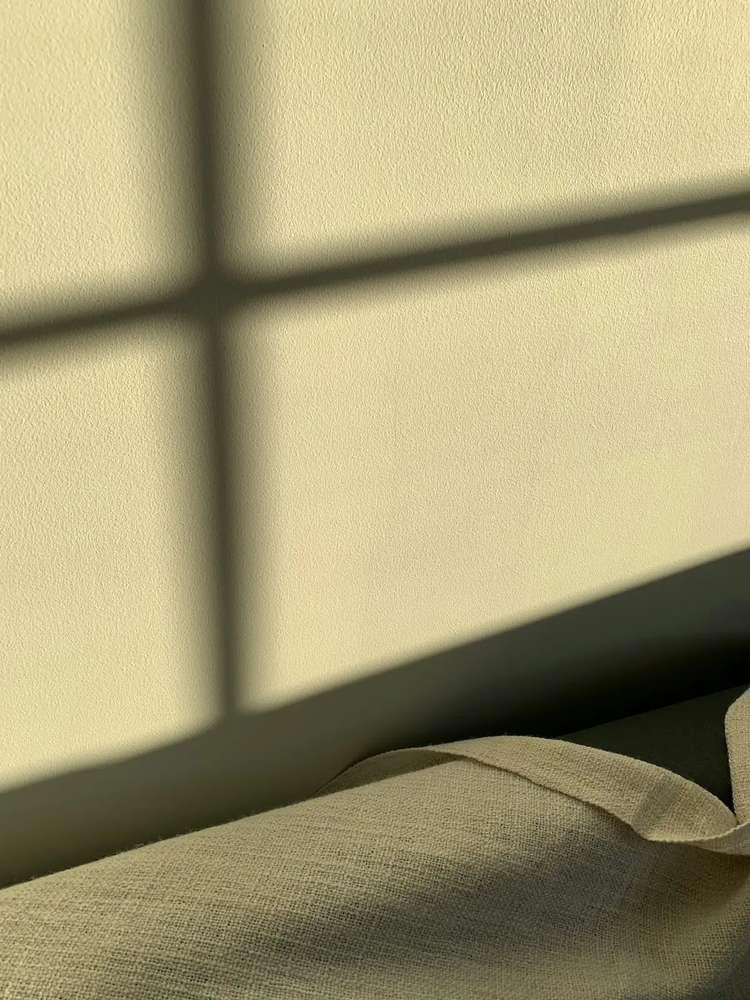
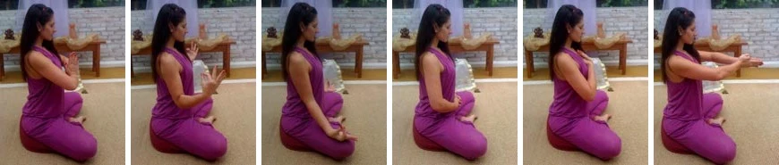

Atendimento online
Prática de Yoga individualizada.
Yoga Terapia
O Yoga se adapta à pessoa,
e não a pessoa ao Yoga.
Cada prática é elaborada a partir do corpo, da respiração e da rotina do aluno, com o acompanhamento de quem estuda e ensina Yoga há 30 anos.
O método
- Escuta
Compreender como o aluno vive, onde acumula tensão e quais aspectos da rotina pedem cuidado.
- Prática
Posturas (asana-s), respiração (pranayama-s) e gestos escolhidos para cada aluno, com apoios simples que já existem em casa.
- Continuidade
A prática é revista a cada semana, para que se integre à rotina.
O Yoga só existe na presença do aluno junto ao professor.
Christiane Ceron
A quem se destina
- Profissionais com rotina de alta exigência, em horário reservado logo cedo ou ao fim do dia.
- Quem cuida da família e do trabalho e encontra pouco tempo para si.
- Pessoas de 50 a 70 anos ou mais, com dores, com prática adaptada e apoios.
- Brasileiros no exterior, em português, no horário do seu fuso.
Sobre
Christiane Ceron.
Há 30 anos dedicada ao estudo e ao ensino do Yoga.
Formada na metodologia Heal Your Life, de Louise Hay, e em Terapia Artística Antroposófica.
- 1939
O bisavô, Ilo Ottani, funda um Centro de Meditação em São Paulo.
- 1985
A mãe, sua primeira professora, abre uma escola de Yoga na Granja Viana.
- 2002
Inicia os estudos com Jorge Knak e Nazaré Cavalcanti, representantes da tradição de Sri Krishnamacharya no Brasil.
- Hoje
Atende online e é criadora da Dance Oceano, em Florianópolis.


Programa Morada
Duas sessões individuais por semana, online.
R$ 3.000 por mês
Acompanhamento contínuo. Máximo de 10 vagas.
- 1Conversa inicialUm primeiro contato para compreender o que você busca.Gratuita
- 2Sessão de mapeamentoAvaliação do corpo, da respiração e da rotina, com o plano da sua prática.R$ 490
- 3Programa MoradaDuas sessões por semana, com revisão semanal da prática.Mensal
Sessão avulsa, sem compromisso mensal: R$ 420.
Pagamento por Pix, cartão ou assinatura mensal.
Perguntas frequentes
As sessões são realizadas online?
Sim. Todas as sessões acontecem por vídeo, de onde você estiver, no Brasil ou no exterior.
É necessário ter experiência com Yoga?
Não. A prática é planejada a partir das condições atuais do seu corpo e da sua rotina.
A Yoga terapia substitui o acompanhamento médico ou terapêutico?
Não. A Yoga terapia é uma prática complementar e não promete cura. Ela não substitui o acompanhamento de profissionais de saúde.
Quais são as formas de pagamento?
Pix, cartão ou assinatura mensal. A conversa inicial é gratuita. A sessão de mapeamento custa R$490 e a sessão avulsa, R$420.
É possível praticar fora do horário comercial?
Sim. Os horários são combinados individualmente, logo cedo ou ao fim do dia. O Programa Morada tem no máximo 10 vagas.
